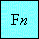
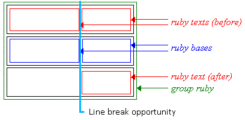
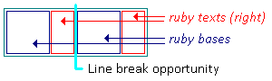
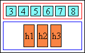
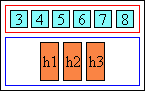
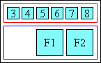
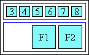

"Ruby" are short runs of text alongside the base text, typically
used in East Asian documents to indicate pronunciation or to provide a
short annotation. This document proposes a set of CSS properties
associated with the 'Ruby' elements. They can be used in combination
with the Ruby elements of HTML [RUBY].
See open issues in
Tracker.
This document is an editors' copy that has no official standing.
This section describes the status of this document at the time of
its publication. Other documents may supersede this document. A list of
current W3C publications and the latest revision of this technical report
can be found in the W3C technical reports
index at http://www.w3.org/TR/.
Publication as a Working Draft does not imply endorsement by the W3C
Membership. This is a draft document and may be updated, replaced or
obsoleted by other documents at any time. It is inappropriate to cite
this document as other than work in progress.
The (archived)
public mailing list www-style@w3.org (see instructions) is preferred for
discussion of this specification. When sending e-mail, please put the
text “css3-ruby” in the subject, preferably like this:
“[css3-ruby] …summary of comment…”
This document was produced by the CSS
Working Group (part of the Style Activity).
This document was produced by a group operating under the 5 February
2004 W3C Patent Policy. W3C maintains a public list of any patent
disclosures made in connection with the deliverables of the group;
that page also includes instructions for disclosing a patent. An
individual who has actual knowledge of a patent which the individual
believes contains Essential
Claim(s) must disclose the information in accordance with section 6 of
the W3C Patent Policy.
This document contains the CSS3 Ruby Module W3C Working
Draft of 3 February 2010.
The comments that the CSS WG received during the previous Last Call review,
together with responses and resulting changes are listed in the disposition of comments.
This specification is one of the CSS level "modules".`It has been developed
by the CSS Working Group which is
part of the Style activity (see
summary). It contains
features to be included for CSS level 3.
This is a Candidate Recommendation, which
means W3C believes the specification is ready to be implemented.
All persons are encouraged to review and implement this
specification and send comments to the (archived) public
mailing list www-style (see instructions). W3C Members
can also send comments directly to the CSS Working Group.
For this specification to become a W3C Recommendation, the
following criteria must be met:
There must be at least two interoperable implementations for
every feature in the specification.
For the purposes of this criterion, we define the following
terms:
feature a section or subsection in the specificationinteroperable passing the respective test case(s) in the test suite, or, if
the implementation is not a web browser, an equivalent test. Every
relevant test in the test suite should have an equivalent test
created if such a user agent (UA) is to be used to claim
interoperability. In addition if such a UA is to be used to claim
interoperability, then there must one or more additional UAs which
can also pass those equivalent tests in the same way for the
purpose of interoperability. The equivalent tests must be made
publically available for the purposes of peer review.implementation a user agent which:
implements the feature.is available (i.e. publicly downloadable or available
through some other public point of sale mechanism). This is the
"show me" requirement.is shipping (i.e. development, private or unofficial
versions are insufficient).is not experimental (i.e. is intended for a wide audience
and could be used on a daily basis.)
A minimum of six months of the CR period must have elapsed. This
is to ensure that enough time is given for any remaining major
errors to be caught.
The comments that the CSS WG received on the last working draft,
together with responses and resulting changes are listed in the disposition of comments.
Patent disclosures relevant to CSS may be found on the Working
Group's public patent disclosure
page.
To find the latest version of this specification, please follow the
"Latest version" link above, or visit the list of W3C Technical Reports.
This CSS3 module depends on the following other CSS3 modules:
- Text
- Line
- Syntax
- Values and units
Issue: Check these dependencies are correct.
There isare a number of illustrations in this document for which the following
legend is used:
 - wide-cell glyph (e.g. Han)
which is the n-th character in the text run, they may also appear as
half size boxes when used as annotations.
 - narrow-cell glyph (e.g. Roman)
which is the n-th glyph in the text run.
- narrow-cell glyph (e.g. Roman)
which is the n-th glyph in the text run.
Many typographical properties in East Asian typography depend on the fact
that a character is typically rendered as either a wide or narrow character. All
characters described by the Unicode Standard [UNICODE] can be categorized by a
width property. This is covered by the Unicode Standard Annex
[UAX#11].
The orientation which the above symbols assume in the diagrams corresponds
to the orientation that the glyphs they represent are intended to assume when
rendered by the user agent. Spacing between these characters in the diagrams is
usually symbolic, unless intentionally changed to make a point.
Finally, in this document, requirements are expressed using the key words
"MUST", "MUST NOT", "REQUIRED", "SHALL" and "SHALL NOT". Recommendations are
expressed using the key words "SHOULD", "SHOULD NOT" and "RECOMMENDED". "MAY"
and "OPTIONAL" are used to indicate optional features or behavior. These
keywords are used in accordance with [RFC 2119]. For
legibility these keywords are used in lowercase form.
"Ruby" is the commonly used name for a run of text that appears in the
immediate vicinity of another run of text, referred to as the "base", and
serves as an annotation or a pronunciation guide associated with that run of
text. Ruby, as used in Japanese, is described in JIS X-4051 [JIS4051] (in Japanese) and in Requirements for Japanese Text Layout [JLREQ] (in English and Japanese)]. The ruby structure and the XHTML markup to represent it
is described in the Ruby Annotation [RUBY] specification. This
section describes the CSS properties relevant to ruby. The following figures
show two examples of Ruby.
In the first example, a single annotation is used to annotate the base
sequence. In Japanese typography, this simple case is sometimes called "taigo ruby" or group-ruby (per-word ruby).
In the second example, multiple annotations are attached to a base
sequence, the hiragana characters on top refer to the pronunciation of each of the
base Kanji characters (annotated in a mono-ruby fashion), while the words 'Keio'
and 'University' on the bottom are
annotations describing the English translation of respectively the first four
and the last two Kanji characters
of the base. To allow correct association between the hiragana characters and
their corresponding Kanji base characters, the spacing between these Kanji
characters may be adjusted (this happens toaround the fourth Kanji character in the
figure 2.12.2 above).
Note: To avoid variable spacing between the Kanji
characters in the example above the hiragana annotations can also be created as
a simple annotation ruby.
The two examples correspond respectively to two types of ruby: a simple ruby using a simple ruby markup and a complex ruby using a complex ruby
markup.
3.1 Ruby specific 'display' property values
The CSS ruby model is based on the W3C Ruby Annotation Recommendation
[RUBY], which is consistent with the XHTML Modularization
Framework [XHTMLMOD]. The Recommendation specifies the ruby structure in a way
to closely parallel
the visual layout of the ruby element. In this model, a ruby consists of one
or more base elements associated with one or more annotation elements.
The CSS model does not require that the document language include elements
that correspond to each of these components. For document languages (such as
XML applications) that do not have pre-defined ruby elements, authors must map
document language elements to ruby elements; this is done with the 'display'
property. The following 'display' values assign ruby semantics to an arbitrary
element:
- ruby (in XHTML: ruby)
- Specifies that an element defines a ruby structure.
- ruby-base (in XHTML: rb)
- Specifies that an element defines a ruby base.
- ruby-text (in XHTML: rt)
- Specifies that an element defines a ruby text.
- ruby-base-container (in XHTML: rbc)
- Specifies that an element contains one or more ruby base.
- ruby-text-container (in XHTML: rtc)
- Specifies that an element contains one or more ruby text.
Issue: I18n WG proposes that there should be a display value rp also, to allow XML-based formats to associate rp behaviour with elements. See thread.
The rbspan attribute should
also be used by XML applications to allow annotation spanning; but in addition, the
'ruby-span' property must be used by those applications to indicate to the user agent the number of
ruby base elements to be spanned.
In the following description, the elements specified by Ruby
Annotation [RUBY] are used to describe the box model. As mentioned
earlier, a user agent can obtain the same results by using the Ruby specific 'display'
property values.
For a user agent that supports the ruby markup, the ruby structure consists of three or more
boxes. The outermost container is the ruby element itself.
In the simple case, it is a container for two non-overlapping boxes: the ruby
text box (rt element)
and the ruby base box (rb element). The
positioning of these two boxes relative to each other is controlled by the 'ruby-position' property.
In the case of complex ruby, the ruby element is a container for two or
three non-overlapping boxes: one ruby base collection (rbc element), and one
or two ruby text collections (rtc element). The
rbc element is itself a container for one or several ruby base
box (rb element), while each rtc element is a
container for one or several ruby text box (rt element). The position of the
rtc element in relation to the related rbc element
is controlled by the 'ruby-position' property. The two
following figures show examples of these complex ruby.
In the example above, the ruby text after (below) the ruby bases contains two rt elements with the first one
being empty, the empty rt element corresponds to the first part
of the ruby base collection (the first part is identified by the first rb element
within the rbc element).
In the example above, the ruby text before (above) the ruby bases spans the whole ruby base collection. The
ruby text after (below) the ruby bases still contain two rt elements, one of
which is empty. The spanning behavior of rt text elements is
controlled by the rbspan attribute in a
way similar to the colspan attribute used for table column.
Issue: The examples above contain the term 'group ruby', which is not used elsewhere in this specification. It appears to be used in a way that is different to the use of the term in JLREQ. I propose to replace it with just 'ruby'.
Note: The visual description of the ruby elements does not refer
necessarily to the logical orders of the elements
The width of the ruby box is by default determined by its widest child
element, whose width in turn is determined by its content. The width of all direct
children of the ruby element is the width of the widest children. In this respect, the ruby
box is much like a two or three row table element, with the
following exceptions:
- the ruby box is an inline element, like an image, even though it itself,
like a table, is a container of other boxes
- the equivalent of the cells: the rb element and the
rt text element can only contain inline-level elements.
- the content of each 'cell' is always measured at its maximum width
- unlike a table, a ruby element doesn't have to fit in a line, the ruby
box may be split into several boxes at line boundary, depending of the
spanning of the ruby texts. This is however only possible for the complex
ruby and can only happen at the boundary of non spanning elements.
- both the ruby text and the ruby base boxes may overlap with adjacent
text (outside of the ruby element) if an appropriate 'ruby-overhang' parameter is set via CSS. Note
however that the actual content of the ruby base cannot overlap with that
adjacent text. The distribution of the content of the ruby base within the
ruby base box is controlled by the 'ruby-align'
property.
If the ruby text is not allowed to overhang, then the ruby behaves like a
traditional box, i.e. only its contents are rendered within its boundaries and
adjacent elements do not cross the box boundary:
However, if ruby text is allowed to overhang adjacent elements and it
happens to be wider than its base, then the adjacent content is partially
rendered within the area of the ruby base box, while the ruby text may be
partially overlapping with the upper blank parts of the adjacent content:
The ruby text related to a ruby base can never overhang another ruby
base.
The alignment of the contents of the base or the ruby text is not affected
by the overhanging behavior. The alignment is achieved the same way regardless
of the overhang behavior setting and it is computed before the space available
for overlap is determined. It is controlled by the 'ruby-align' property.
The exact circumstances in which the ruby text will overhang other
elements, and to what degree it will do so, will be controlled by the 'ruby-overhang' property.
This entire logic applies the same way in vertical ideographic layout, only
the dimension in which it works in such a layout is vertical, instead of
horizontal.
Note: Because the purpose of the XHTML rp element [RUBY] is to allow pre-existing user agents
to parenthesize ruby text content, an XHTML user agent should use a styling rule
for these elements that avoids rendering them such as rp {display:
none}.
The interaction of the ruby box and line stacking is controlled by the
'line-stacking-ruby' property described in the CSS3 Line Module. That property
takes two values: 'include-ruby' and 'exclude-ruby. Depending on the property
value, the ruby box is considered or excluded for line stacking. Even if the
ruby box is considered for line stacking, some values of the
'line-stacking-strategy' property (also described in the CSS3 Line module) can
still create occurrences where a the ruby box will eventually be ignored (e.g.
case where the 'line-stacking-strategy' value is 'block-line-height').
In the following figure, each line box is shown with leading space
distributed before and after the two text segments ('Previous line' and 'Ruby
base'); the dotted lines show the line box for each line. The
'line-stacking-ruby' property is set to 'exclude-ruby'. The achieved effect is
that the ruby box does not affect the line to line spacing. It is however the
responsibility of the style author to avoid 'bleeding' effects between the ruby
text and the surrounding text of images.
In the following figure, the line boxes have no extra leading space. The
'line-stacking-ruby' property is set to 'include-ruby' and the
'line-stacking-strategy' property is set to a value where inline boxes are
considered for line stacking. In this case, the line box with
the ruby text is affected and has its 'stack-height' increased by the amount
necessary to fit the ruby text.
This mechanism allows rendering of evenly spaced lines of text within a
block-level element, whether a line contains ruby or not. The authors need
only to set for the block-level element a line height value larger than the
computed line-height of the largest ruby element within the block.
When a ruby falls at the end of a line where there is not sufficient room for the entire ruby to fit on the line, the complex ruby may be broken at locations where boxes of the ruby container align. Some examples are provided below to provide more clarity.

Figure 3.4.1: Complex ruby line breaking opportunity

Figure 3.4.1: "Bopomofo" ruby line breaking opportunity
All properties, in addition to the noted values, take 'initial' and
'inherit'. These values are not repeated in each of the property value
enumeration.
4.1 Ruby positioning: the 'ruby-position' property
| Name: | ruby-position |
|---|
| Value: |
before | after | rightbopomofo | inline |
| Initial: |
before |
| Applies to: |
the parent of elements with display: ruby-text. |
| Inherited: |
yes |
| Percentages: |
N/A |
| Media: |
visual |
| Computed value: |
specified value (except for initial and inherit) |
Issue: I am proposing that we replace 'right' with 'bopomofo', since that was its original intended purpose and such removes potential ambiguity with 'inline' or 'before'. Bopomofo ruby needs special handling by the implementation, if ruby is to always appear to the right. (Note that the user may also choose to position bopomofo ruby before the base, in which case they would use the normal 'before' setting.)
This property is used by the parent of elements with display: ruby-text to
control the position of the ruby text with respect to its base. Such parents
are typically either the ruby element itself (simple ruby) or the
rtc element (complex ruby). This assures that all parts of a rtc
element will be displayed in the same position. Possible values:
Issue-107: Roland Steiner has requested the addition of an auto value as default. See this thread and this one.
- before
- The ruby text appears before the base. This is the most common setting
used in ideographic East Asian writing systems. This is the initial
value.
If the base appears in a vertical-ideographic layout mode, the ruby
appears on the right side of the base and is rendered in the same layout
mode as the base (i.e. vertical-ideographic).
- after
- The ruby text appears after the base. This is a relatively rare
setting used in ideographic East Asian writing systems, most easily
found in educational text.
If the base appears in a vertical ideographic mode, the bottom ruby
appears on the left side of the base and is rendered in the same layout
mode as the base (i.e. vertical).
rightbopomofo-
Issue: I am proposing that we replace 'right' with 'bopomofo', since that was its original intended purpose and such removes potential ambiguity with 'inline' or 'before'. Bopomofo ruby needs special handling by the implementation, if ruby is to always appear to the right. (Note that the user may also choose to position bopomofo ruby before the base, in which case they would use the normal 'before' setting.) Need agreement that bopomofo is a suitable replacement for right. See this thread following a request from the i18n WG.
The ruby text appears on the right of the base. Unlike 'before' and
'after', this value is visual and is not relative to the text flow direction.
Note theThis value is provided for the special case of traditional Chinese as used especially in
Taiwan: ruby (made of bopomofo glyphs) in that context can appears vertically along
the right side of the base glyph, as if the text were in vertical
layout, but the bases themselves are rendered on a horizontal line,
since the actual layout is horizontalwhether the layout of the base characters is vertical or horizontal:
In order to achieve that effect, vertical-ideographic layout should
be set on each individual ruby. That can be accomplished with the
following simple CSS rule:
ruby.bopomofo { writing-mode: tb-rl }
Note: The bopomofo
transcription is written in the normal way as part of the ruby text.
The user agent is responsible for ensuring the correct relative alignment
and positioning of the glyphs, including those corresponding to the
tone marks, when displaying as vertical ruby. Tone marks are spacing characters that occur in memory at the end of the ruby text for each base character. They are usually displayed in a separate column to the right of the bopomofo characters, and the height of the tone mark depends on the number of characters in the syllable. One tone mark, however, is placed above the bopomofo, not to the right of it.
Note: To make bopomofo annotations appear before or after the base text, like annotations for most other East Asian writing systems, use the 'before' and 'after' values of ruby-position.
It is not defined how a user-agent should handle ruby text that is not bopomofo when the value of ruby-position is set to 'right'.
- inline
-
Ruby text follows the ruby base with no special styling. The value can be used to disable ruby text positioning.
If the author has used the XHTML rp element [RUBY] they should set the display value for that element to inline, so that the ruby text is distinguishable from the base text. If no rp element has been used, the author can use the content property with the :before and :after pseudo-elements to set off the ruby text.
Issue: Here is a request for this section to be added, from the i18n WG..
If two rtc elements are set with the same ruby-position value, (for example
both 'before'), the relative position of the two elements is undefined. This
setting should not be used.
| Name: | ruby-align |
|---|
| Value: |
auto | start | left | center | end | right | distribute-letter |
distribute-space | line-edge |
| Initial: |
auto |
| Applies to: |
all elements and generated content |
| Inherited: |
yes |
| Percentages: |
N/A |
| Media: |
visual |
| Computed value: |
specified value (except for initial and inherit) |
This property can be used on any element to control the text alignment of
the ruby text and ruby base contents relative to each other. It applies to all
the ruby's in the element. For simple ruby, the alignment is applied to the
ruby child element whose content is shorter: either the rb element or the rt element [RUBY]. For complex ruby, the alignment is also applied to the
ruby child elements whose content is shorter: either the rb
element and/or one or two rt elements for each related ruby text
and ruby base element within the rtc and rbc
element.
Possible values:
Issue: Tony Graham has suggested that distribute-letter and distribute-space be values of a ruby-group-distribution property, and line-edge be moved to a ruby-alignment-edge property, and that the rest be gathered under a ruby-alignment property. And that ruby-align become a shorthand.
- auto
- The user agent determines how the ruby contents are aligned. This is
the initial value. The behavior recommended by
[JIS4051][JLREQ] is for a wide-cell ruby is to be aligned in the 'distribute-space' mode:
The recommended behavior for a narrow-cell glyph ruby is to be
aligned in the 'center' mode.
start- left
- The ruby text content is aligned with the start edge of the base.
Issue: The i18n WG feels that start and left should not be synonymous. Can we drop left (there is no left/right in overhang)? See this thread.
- center
- The ruby text content is centered within the width of the base. If the
length of the base is smaller than the length of the ruby text, then the
base is centered within the width of the ruby text.
end- right
- The ruby text content is aligned with the end edge of the base.
Issue: The i18n WG feels that end and right should not be synonymous. Can we drop right (there is no left/right in overhang)? See this thread.
- distribute-letter
- If the width of the ruby text is smaller than that of the base, then
the ruby text contents are evenly distributed across the width of the
base, with the first and last ruby text glyphs lining up with the
corresponding first and last base glyphs. If the width of the ruby text
is at least the width of the base, then the letters of the base are
evenly distributed across the width of the ruby text.
- distribute-space
- If the width of the ruby text is smaller than that of the base, then
the ruby text contents are evenly distributed across the width of the
base, with a certain amount of white space preceding the first and
following the last character in the ruby text. That amount of white
space is normally equal to half the amount of inter-character space of
the ruby text. If the width of the ruby text is at least the width of
the base, then the same type of space distribution applies to the base.
In other words, if the base is shorter than the ruby text, the base is
distribute-space aligned. This type of alignment
is described by [JLREQ].
This type of alignment is sometimes referred
to as the "1:2:1" alignment [JIS4051].
- line-edge
- If the ruby text is not adjacent to a line edge, it is aligned as in
'auto'. If it is adjacent to a line edge, then it is still aligned as in
auto, but the side of the ruby text that touches the end of the line is
lined up with the corresponding edge of the base. This type of alignment
is
specifieddescribed by [JIS4051][JLREQ]. This type of alignment is
relevant only to the scenario where the ruby text is longer than the
ruby base. In the other scenarios, this is just 'auto'.
For a complex ruby with spanning elements, one additional consideration is
required. If the spanning element spans multiple 'rows' (other rbc or rtc
elements), and the ruby alignment requires space distribution among the
'spanned' elements, a ratio must be determined among the 'columns' of spanned
elements. This ratio is computed by taking into consideration the widest
element within each column.
In the context of this property, the 'left' and 'right' values are
synonymous with the 'start' and 'end' values respectively. I.e. their meaning
is relative according to the text layout flow. Most of the other CSS
properties interpret 'left' and 'right' on an 'absolute' term. See Appendix A
of the CSS3 Text Module for further details.
| Name: | ruby-overhang |
|---|
| Value: |
auto | start | end | none |
| Initial: |
none |
| Applies to: |
the parent of elements with display: ruby-text |
| Inherited: |
yes |
| Percentages: |
N/A |
| Media: |
visual |
| Computed value: |
specified value (except for initial and inherit) |
This property determines whether, and on which side, ruby text is allowed
to partially overhang any adjacent text in addition to its own base, when the
ruby text is wider than the ruby base. Note that ruby text is never allowed to
overhang glyphs belonging to another ruby base. Issue: This rule must be broken if we are to allow support for jukugo ruby. Also the user agent is free to assume
a maximum amount by which ruby text may overhang adjacent text. The user agent may use
the [JIS4051] recommendation of using one ruby text character
length as the maximum overhang length. Detailed rules for how ruby text can overhang adjacent characters for Japanese are described by [JLREQ].
Possible values:
- auto
- The ruby text can overhang text adjacent to the base on either side.
[JLREQ] and [JIS4051] specif
iesy the categories of characters that
ruby text can overhang. The user agent is free to follow the [JIS4051]those recommendations or specify its own classes of
characters to overhang. This is the initial value.
- start
- The ruby text can only overhang the text that precedes it. That means, for
example, that ruby cannot overhang text that is to the
leftright of it in
horizontal LTR layout, or and it cannot overhang text that is abovebelow it in
vertical-ideographic layout.
- end
- The ruby text can only overhang the text that follows it. That means, for
example, that ruby cannot overhang text that is to the
rightleft of it in
horizontal LTR layout, orand it cannot overhang text that is belowabove it in
vertical-ideographic layout.
- none
- The ruby text cannot overhang any text adjacent to its base, only its
own base.
| Name: | ruby-span |
|---|
| Value: |
attr(x) | none |
| Initial: |
none |
| Applies to: |
elements with display: ruby-text |
| Inherited: |
no |
| Percentages: |
N/A |
| Media: |
visual |
| Computed value: |
<number> |
This property controls the spanning behavior of annotation elements.
Note: A XHTML user agent may also use the rbspan
attribute to get the same effect.
Possible values:
- attr(x)
- The value of attribute 'x' as a string value. The string value is
evaluated as a <number> to determine the number of ruby base elements to be
spanned by the annotation element. If the <number> is '0', it is replaced by
'1'.The <number> is the computed value.
- none
- No spanning. The computed value is '1'.
The following example shows an XML example using the 'display' property
values associated with the 'ruby structure and the 'ruby-span' property
myruby { display: ruby-base; }
myrbc { display: ruby-base-container; }
myrb { display: ruby-base; }
myrtc.before { display: ruby-text-container; ruby-position: before}
myrtc.after { display: ruby-text-container; ruby-position: after}
myrt { display: ruby-text; ruby-span: attr(rbspan); }
...
<myruby>
<myrbc>
<myrb>10</myrb>
<myrb>31</myrb>
<myrb>2002</myrb>
</myrbc>
<myrtc class="before">
<myrt>Month</myrt>
<myrt>Day</myrt>
<myrt>Year</myrt>
</myrtc>
<myrtc class="after">
<myrt rbspan="3">Expiration Date</myrt>
</myrtc>
</myruby>
In addition to the specified values, all properties take the
'inherit' and 'initial' values.
| Name |
Values |
Initial |
Applies to |
Inh. |
Percentages |
Media groups
|
| 'ruby-align' |
auto | start | left | center | end | right | distribute-letter |
distribute-space | line-edge |
auto |
all elements and generated content |
yes |
N/A |
visual |
| 'ruby-overhang' |
auto | start | end | none |
none |
the parent of elements with display: ruby-text |
yes |
N/A |
visual |
| 'ruby-position' |
before | after | right | inline |
see individual properties |
the parent of elements with display: ruby-text |
yes |
N/A |
visual |
| 'ruby-span' |
attr(x) | none |
none |
elements with display: ruby-text |
no |
N/A |
visual |
Issue: The i18n WG has requested the addition of a sample user agent default style sheet, as promised by Ruby Annotation section 3.4. See this thread.
There are two modules defined by this chaptermodule:
CSS3 Simple Ruby model
CSS3 Complex Ruby model.
They both contain all the properties specified by this CSS chapter, i.e. 'ruby-align', 'ruby-overhang', 'ruby-position'
and 'ruby-span'. They differ by the required
'display' property values. The Simple Ruby model requires the values: 'ruby',
'ruby-base' and 'ruby-text'. The Complex Ruby model requires in addition the
values: 'ruby-base-container' and 'ruby-text-container'.
- Bopomofo
- 37 characters and 4 tone markings used as phonetics in Chinese,
especially standard Mandarin.
- Hanja
- Subset of the Korean writing system that utilizes ideographic
characters borrowed or adapted from the Chinese writing system. Also see
Kanji.
- Hiragana
- Japanese syllabic script, or character of that script. Rounded and
cursive in appearance. Subset of the Japanese writing system, used together
with kanji and katakana. In recent times, mostly used to write Japanese
words when kanji are not available or appropriate, and word endings and
particles. Also see Katakana.
- Ideograph
- A character that is used to represent an idea, word, or word component,
in contrast to a character from an alphabetic or syllabic script. The most
well-known ideographic script is used (with some variation) in East Asia
(China, Japan, Korea,...).
- Kana
- Collective term for hiragana and katakana.
- Kanji
- Japanese term for ideographs; ideographs used in Japanese. Subset of the
Japanese writing system, used together with hiragana and katakana. Also see Hanja.
- Katakana
- Japanese syllabic script, or character of that script. Angular in
appearance. Subset of the Japanese writing system, used together with
kanji and hiragana. In recent times, mainly used to write foreign words. Also see Hiragana.
- Mono-ruby
- In Japanese typography: Ruby associated with a single character of
the base text.
- Ruby
- A run of text that appears in the vicinity of another run of text and
serves as an annotation or a pronunciation guide for that text.
This specification would not have been possible without the help from:
Stephen Deach, Martin Dürst, Hideki Hiura(樋浦 秀樹), Masayasu Ishikawa(石川
雅康), Chris
Pratley, Takao Suzuki(鈴木 孝雄), Frank Yung-Fong Tang, Chris Thrasher, Masafumi Yabe家辺
勝文), Steve Zilles.
- [CSS2] Issue: Change this to CSS 2.1
- Cascading Stylesheets, level 2 (CSS2) Specification, W3C
Recommendation
- Bert Bos, Håkon Wium Lie, Chris Lilley and Ian Jacobs, 12 May 1998
Available at:
http://www.w3.org/TR/1998/REC-CSS2-19980512
[CSS3TEXT]CSS3 module: Text (working draft)Michel Suignard; 24 October 2002
Available at: http://www.w3.org/TR/2002/WD-css3-text-20021024[HTML4]HTML 4.01 Specification, W3C RecommendationDave Raggett, Arnaud Le Hors and Ian Jacobs, 18 December 1997, latest
revised 24 December 1999
Available at: http://www.w3.org/TR/1999/REC-html401-19991224- [JIS4051] Issue: Change this to the 2004 version of the spec.
- Line composition rules for Japanese documents (日本語文書の行組版方法)
- JIS X 4051-1995, Japanese Standards Association, 1995 (in
Japanese)
- [JIS4052]
- "Exchange format for Japanese documents with composition markup"
(日本語文書の組版指定交換形式)
- JIS X 4052:2000, Japanese Standards Association, 2000 (in Japanese)
- [JLREQ]
- "Requirements for Japanese Text Layout, W3C WG Note"
(日本語組版処理の要件（日本語版）)
- Yasuhiro Anan (阿南 康宏), Hiroyuki Chiba (千葉 弘幸), Junsaburo Edamoto (枝本 順三郎), Richard Ishida, Keiichiro Ishino (石野 恵一郎), Tatsuo Kobayashi (小林 龍生), Toshi Kobayashi (小林 敏), Kenzou Onozawa (小野澤 賢三), Felix Sasaki, 4 June 2009,
Available at: http://www.w3.org/TR/jlreq/, and in Japanese
- [RFC 2119]
- Scott Bradner, Key words
for use in RFCs to Indicate Requirement Levels, IETF RFC 2119.
(See
http://www.ietf.org/rfc/rfc2119.txt.)
- [RUBY]
- Ruby Annotation, W3C Recommendation
- Marcin Sawicki, Michel Suignard, Masayasu Ishikawa, Martin Dürst and
Tex Texin, 31 May 2001,
Available at: http://www.w3.org/TR/2001/REC-ruby-20010531
- [UNICODE]
- The Unicode Consortium. Book version: The Unicode Standard: Version 3.0.
Addison Wesley Longman. 2000. ISBN 0-201-61633-5. Online version: The Unicode
Standard: Version 3.2.0, URL:
http://www.unicode.org/unicode/standard/versions/enumeratedversions.html#Unicode_3_2_0
For more information, consult the Unicode Consortium's home page at
http://www.unicode.org/
- [UAX#11]
- Asmus Freytag. East Asian Width. 15 March 2002. Unicode
Standard Annex #11. URL:
http://www.unicode.org/unicode/reports/tr11/tr11-10
[XSL]Extensible Stylesheet Language (XSL) Version 1.0, W3C RecommendationSharon Adler, Stephen Deach, et al., 15 October 2001
Available at:
http://www.w3.org/TR/2001/REC-xsl-20011015/-
[XHTMLMOD]
- Modularization of XHTML, W3C Recommendation
- Murray Altheim, Shane McCarron, et al., 10 April 2001
Available at:
http://www.w3.org/TR/2001/REC-xhtml-modularization-20010410/


 
 
